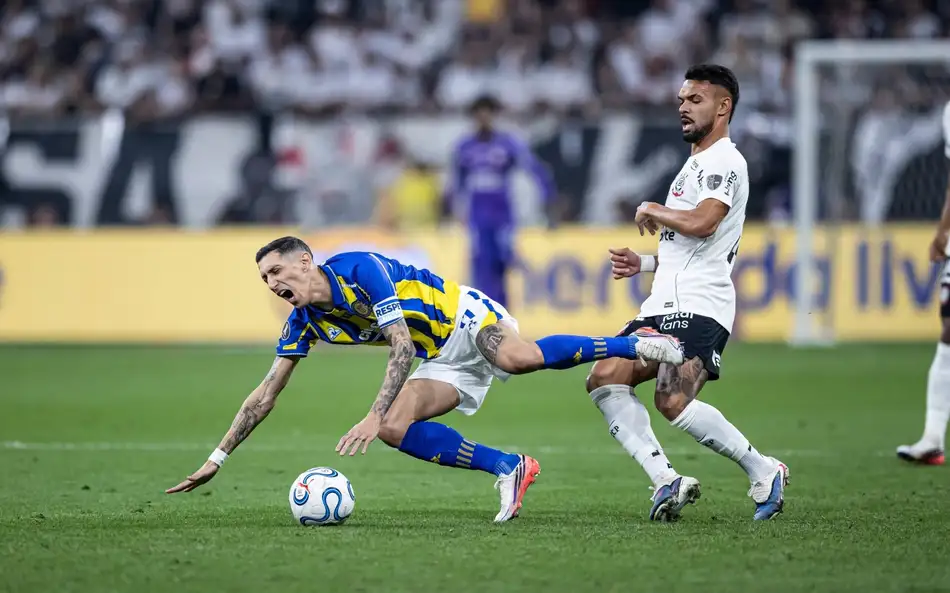

Boas-Vindas FIEL!
Boas-vindas Fiel ao meu novo blog! Aqui vou compartilhar notícias, informações e atualizações sobre o Timão, sempre com muita opinião
Por: Arthur Ivanski
Vou compartilhar notícias, informações e atualizações sobre o Timão
Boas-vindas Fiel ao meu novo blog! Aqui vou compartilhar notícias, informações e atualizações sobre o Timão, sempre com muita opinião
Por: Arthur Ivanski

O camisa 10 continua no Parque São Jorge. Após dias de muita tensão, reviravoltas e incertezas nos bastidores, o Corinthians anunciou oficialmente a renovação de contrato do atacante holandês Memphis Depay. O novo vínculo agora vai até julho de 2028, garantindo a permanência de um dos principais nomes do futebol sul-americano na atualidade.
Reviravolta no Parque São Jorge: A negociação parecia ter chegado a um fim definitivo quando a diretoria corinthiana publicou uma nota afirmando que o acordo não seria prolongado, citando a responsabilidade financeira e a sustentabilidade do clube. No entanto, a pressão da torcida e a vontade do próprio atleta em continuar pesaram na balança.Em uma demonstração de carinho pelo clube e pelo projeto, Memphis aceitou reduzir consideravelmente os valores e abriu mão de cerca de R$ 14 milhões em luvas, auxílios e bonificações previstos anteriormente. O acerto final incluiu a renegociação de valores em aberto e a adequação do contrato à realidade financeira do Timão, contando com o aval do Conselho de Orientação (CORI).
O Peso de Memphis em Campo: Desde a sua chegada, o atacante holandês acumulou 79 partidas, 20 gols e taças importantes como a Copa do Brasil e o Campeonato Paulista, se tornando a grande referência técnica da equipe comandada pelo técnico Fernando Diniz.Com o final da novela e já integrado aos treinamentos no CT Dr. Joaquim Grava, a Fiel Torcida pode respirar aliviada e voltar a sonhar alto. O camisa 10 mostrou que entendeu o espírito do clube e está pronto para escrever novos capítulos vitoriosos com o manto alvinegro.
Por: Arthur Ivanski

O Corinthians venceu o Rosario Central por 1 a 0 na Neo Química Arena, com gol de Breno Bidon e assistência de Memphis Depay, garantindo uma vaga dramática nas quartas de final da Copa Libertadores mesmo jogando com um a menos após a expulsão de Raniele.O roteiro que a Fiel conhece bem.
Sejamos honestos: o torcedor corinthiano não sabe viver na paz. Quando o time entrou em campo em Itaquera após o 0 a 0 na Argentina, a expectativa era de imposição. Mas o que vimos foi um jogo tenso, truncado e abaixo da média técnica na maior parte do tempo. O Rosario Central, com nomes pesados como Ángel Di María, administrava o empate com perigo.A situação que já estava difícil virou o puro caos quando Raniele recebeu o segundo cartão amarelo e foi expulso no segundo tempo. Ficar com dez em um mata-mata de Libertadores contra um time argentino cascudo é a receita para o desespero. E foi exatamente aí que a mística alvinegra se ativou.
A aura de Memphis e a estrela de Bidon: O divisor de águas da noite não foi tático, foi de alma. A entrada de Memphis Depay — logo na semana em que sua novela de renovação acalmou os ânimos da arquibancada — mudou a frequência do jogo. O holandês tem aquela "aura" de jogador decisivo que não precisa de 90 minutos para desequilibrar.Numa falta venenosa cobrada por Memphis na ponta esquerda, o jovem Breno Bidon antecipou a marcação com uma coragem comovente e empurrou para o fundo das redes. Aos 21 anos, Bidon coroa uma atuação gigante não só técnica, mas de pura entrega.
Por: Arthur Ivanski

O torcedor corinthiano viveu uma montanha-russa de emoções nos últimos dias. Após a grande festa pela classificação às quartas de final da Conmebol Libertadores no meio da semana, o foco voltou para o Brasileirão. Porém, o resultado não foi o esperado. Fora de casa, um Corinthians pouco inspirado acabou superado pelo Coritiba por 2 a 1.O tropeço no Sul acendeu o sinal de alerta para a oscilação da equipe nos pontos corridos.
O peso dos desfalques e as escolhas de Diniz: De olho no desgaste físico do elenco, o técnico Fernando Diniz optou por mexer bastante na escalação inicial. Peças importantes como o goleiro Hugo Souza e os laterais Matheuzinho e Matheus Bidu foram preservados por controle de carga. Além disso, o meia Rodrigo Garro cumpriu suspensão automática.Com tantas modificações, o Timão demonstrou clara falta de entrosamento e lentidão na criação das jogadas. O castigo veio ainda na etapa inicial: aos 39 minutos, Pedro Rocha dominou na área e bateu firme para abrir o placar para o Coxa.
Estreia no segundo tempo e o balde de água fria: Atrás no marcador, Diniz mandou o astro Memphis Depay a campo logo no intervalo. O atacante holandês buscou o jogo, deu maior movimentação ao setor ofensivo e ajudou o Corinthians a criar chances reais de gol.Contudo, na melhor fase do Alvinegro na partida, a defesa vacilou. Aos 29 minutos do segundo tempo, Paulo Roberto apareceu completamente livre na área para cabecear e ampliar para os donos da casa. Já nos acréscimos, o volante Raniele ainda descontou de cabeça após cruzamento de Allan, mas a reação parou por ali: 2 a 1.
Por: Arthur Ivanski

Nesta segunda-feira (24), a equipe Sub-17 do Corinthians realizou o treinamento apronto para enfrentar o América-MG, em jogo marcado para às 15 horas desta terça-feira (25) na Arena Urbsan, em Betim-MG, e que é válido pela 13ª rodada do Campeonato Brasileiro da categoria.
Para esta partida, o técnico Guilherme Nascimento conta com o retorno do meia Lucca Caramico, que estava a serviço da seleção brasileira Sub-17 e desfalcou o Timão no empate por 1 a 1 com o Fluminense. Caramico, artilheiro do Corinthians na competição, manteve a fase artilheira com a amarelinha, tendo marcado o primeiro dos três gols da vitória por 3 a 0 do Brasil no amistoso com a Venezuela. De volta ao Timão, ele se mostrou confiante para o desafio contra o Coelho. “Foi uma experiência incrível. Fiquei muito feliz não só por ter jogado pela seleção, mas também por ter marcado um gol e ajudado a equipe a vencer. Espero poder fazer o mesmo neste jogo para ajudar meus companheiros aqui da melhor forma. Tenho certeza de que faremos um grande jogo com o América”, disse o armador.
Com 23 pontos, o Corinthians está na quarta colocação. O Coelho é o 11º, com 16.
Por: Arthur Ivanski

O Teatro Corinthians volta a receber o espetáculo “Os Fundadores – A Origem do Time do Povo” a partir do dia 31 de agosto.
O retorno da montagem será marcado por uma apresentação especial na virada para 1º de setembro, data em que o Sport Club Corinthians Paulista completa 116 anos. Ambientado na São Paulo de 1910, o espetáculo retrata os primeiros capítulos da história do Corinthians e a trajetória dos responsáveis pela fundação do Clube. A montagem apresenta, de forma humana e marcante, o contexto em que nasceu o Time do Povo e os personagens que participaram da construção de sua identidade.
A apresentação especial será realizada no dia 31 de agosto, às 23h59, no Teatro Corinthians, já no dia 1º de setembro, haverá uma segunda sessão, às 19h10. Com duração de 80 minutos e classificação livre, o espetáculo permanecerá em cartaz até outubro, as demais datas de apresentação serão divulgadas em breve. A iniciativa reforça o compromisso do Departamento Cultural do Corinthians com a preservação e a valorização da memória do Clube, utilizando o teatro como ferramenta para manter vivas as histórias que fazem parte da trajetória alvinegra.
Os ingressos para as apresentações podem ser adquiridos diretamente na bilheteria do Teatro Corinthians ou pelo link disponível na bio do Instagram oficial do Clube.
Por: Arthur Ivanski
O Teatro Corinthians volta a receber o espetáculo “Os Fundadores – A Origem do Time do Povo” a partir do dia 31 de agosto.
O Corinthians está muito perto de selar a venda do jovem volante André (também conhecido como André Luiz) para o Nottingham Forest, da Inglaterra. A proposta apresentada pelos ingleses gira em torno de 13,6 milhões de libras, o que equivale a cerca de R$ 95 milhões na cotação atual. O clube paulista, dono de 70% dos direitos econômicos do meio-campista, enxerga a negociação com bons olhos para aliviar o fluxo de caixa e atingir as metas financeiras estipuladas para a temporada de 2026. A diretoria alvinegra corre contra o tempo para alinhar os últimos detalhes contratuais, já que a janela de transferências do futebol europeu se encerra no início de setembro e o desfecho precisa ser rápido.
Essa forte investida da Premier League surge após meses de assédio europeu sobre o jogador, que já havia despertado o interesse do Milan e de outras equipes da Itália no começo do ano. Criado nas categorias de base do Timão, André se destacou pela forte marcação e pela qualidade na saída de bola, características que chamaram a atenção dos olheiros britânicos. Caso a transferência seja oficializada nos próximos dias, o técnico do Corinthians terá o desafio de reestruturar o meio-campo para o restante das competições, enquanto a torcida se despede de mais uma promessa do terrão que ruma ao futebol internaciona
Por: Arthur Ivanski